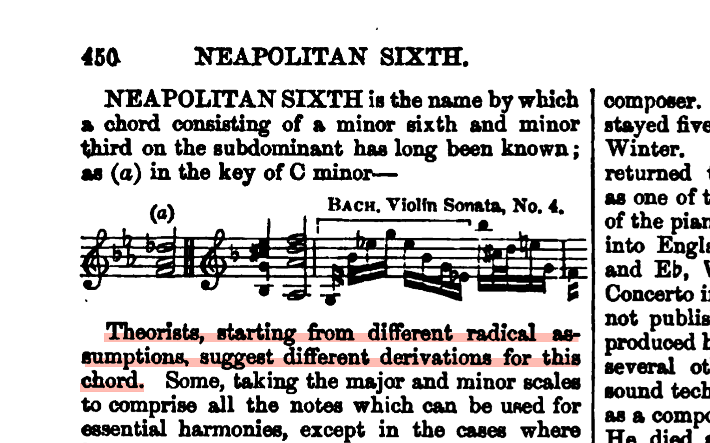

在这篇文章中，将出现第VII章中介绍过的古典风格和弦记谱法（例如在 C 小调中若提及“III”，指的就是“E♭”和弦等）。
 1. 复习“那不勒斯和弦”
1. 复习“那不勒斯和弦”
在第VII章中，我们介绍了古典音乐特有的和弦——“那不勒斯和弦”。主要是在小调中，以 ♭II 级为根音的和弦群的总称。

整个古典时代它一直被广泛使用，其独特的音响在现代（如电影《夺宝奇兵/印第安纳·琼斯》的主题曲等）中也依然大显身手。
在那不勒斯和弦中，尤为人们所钟爱的，就是其第一转位形式——“那不勒斯六和弦（Neapolitan Sixth）”。

残留的谜团
关于“那不勒斯和弦”与“那不勒斯六和弦”，在理论诠释上仍残留着谜团。
对于前者，在以 ♭II 为根音的和弦中，究竟多大的范围能被称为那不勒斯和弦？这就是所谓的包含范围的问题。
VIm7 IIm7 ♭II7 IΔ7
以“三全音代理”之名介绍的爵士流派技法，是否包含在“那不勒斯和弦”之中？这是音乐理论界偶尔会掀起讨论的议题之一。
而对于那不勒斯六和弦，它既可以被理解为“IV级的五音上移”，也可以被理解为“II级的根音下移”，存在着诠释上的双重性问题。

在第VII章介绍那不勒斯和弦时，由于侧重于实践，我们对这些方面几乎未作深入探讨。在探讨更具学术研究性质内容的第VIII章中，我们将重新聚焦并剖析这一课题。
2. 几种代表性的诠释
“那不勒斯六和弦”在18世纪（1700年代）由那不勒斯乐派广泛使用，到了19世纪（1800年代）这一爱称已深入人心；然而早在1880年时，理论界的诠释就已经百家争鸣，在历史上恐怕从未有过统一为单一说法的时期。

摘自《格罗夫音乐与音乐家大辞典》这是至今仍在修订出版的权威大典《格罗夫音乐与音乐家大辞典》（Grove's Dictionary of Music & Musicians）的1880年版。早在这一时期，词典中就写道：“理论家们从各种假说出发，各自坚持着截然不同的渊源推论”，并详细介绍了多达5种学说。没错，围绕“那不勒斯六和弦”的诠释，绝不仅仅是两种说法那么简单[1]。
因此在此不妨先坦白相告：本文所要探讨的，绝非“哪种诠释才是正确的”这种低维度的争论。而是从更高的视角俯瞰全局，深入学习音乐理论观——这才是本次探讨的宗旨所在。
那不勒斯六和弦名称普及的时期
在那不勒斯乐派鼎盛期刚过不久出版的书籍中，被认为是极早出现“那不勒斯六和弦”名称的记述如下：
The Neapolitan sixth is a minor third and a minor sixth to Fa, and is never inverted. It is resolved into the triad of Sol.
那不勒斯六和弦是在 Fa 之上附加一个小三度和一个小六度。绝不以此形态发生转位。它解决到 Sol 的三和弦上。
(1812) William Crotch – Elements of Musical Composition
早到有论文推测这或许是文献中的首次记载[2]。在这一时期，讨论还远未达到探究渊源的高度。只是以“意大利正在流行这样一种和弦”的感觉，仅仅陈述其构成音，散发着浓浓的“黎明期”气息。结合同时期周边著作及后继文献的记载来看，毋庸置疑，此时它在理论界尚未确立“经典定式”的地位。
“根本不需要那不勒斯六”学说
此后过了50年，甚至出现了指名道姓批评威廉·克罗奇（William Crotch）的著作：
Dr. Crotch, Callcott, and most English theorists, have named it the “neapolitan sixth”, but such a name is very unmeaning, as it certainly was at no time peculiar to the Neapolitan composers.
克罗奇博士、考尔科特等人以及多数英国理论家将其命名为‘那不勒斯六和弦’，但这样的名称毫无意义。因为这绝非那不勒斯作曲家所独有的和弦。
(1868) F. A. Gore Ouseley – Principles of Harmony
连“那不勒斯六和弦”这个名字本身都予以否定，这十分耐人寻味。读到这里，我们深刻体会到他们同样是普通人，各人有各人的不同主张；所谓的“古典理论中就是如此”充其量不过是一种粗线条的概括罢了。
下属小调借用说
在19世纪后半叶，我们还可以发现有人提出了有趣的“第三种学说”：
It is derived from the minor scale of the subdominant of a minor key. (中略) In modern music, however, this chord is reduced to a much simpler form, being treated practically as a common chord of the flattened supertonic. It will be convenient to give it this name and to speak of it as having three positions :
它源自小调下属小调的音阶。（中略）然而在现代音乐中，该和弦被还原为一种简易得多的形式，实际上被当作降二级（flattened supertonic）的普通和弦来处理。在统一讨论其三种位置分布时，给予它这样一个称谓确实更为方便。
(1876) John Stainer – A Theory of Harmony
所谓的“从下属小调借用”，简而言之，如果是 C 小调，那就是从 F 小调借来的。“既然多了一个降号，那么认为它是从多一个降号的调借来的不是最直接明了的吗？”这就是该学说的观点。

不是“变音”，而是“从其他调借用”。这确实也是一种合情合理的视角。此时已经出现了对其他诠释的批评——指责其为“一种‘简化版’的诠释在‘事实上’大行其道”，这也非常有意思。
II级根音下移说
那么，主张“II级根音下移说”的人们又是如何思考的呢？让我们翻阅“波士顿六人组”作曲家之一、对音乐教育贡献良多的阿瑟·富特（Arthur Foote）的著作来一探究竟：
This triad, with its diminished 5th, is a somewhat unsatisfactory dissonance, as we have seen. Early in the development of music, we find composers altering it into one with a perfect 5th by lowering the root .(中略) This triad on the second degree of the minor mode with a lowered root, when in the first inversion, is known as the Neapolitan Sixth.
如我们所见，这个和弦（注：指小调的 II 级）由于减五度的存在，造成了令人不甚满意的协和感缺失。在音乐发展的早期，我们可以发现作曲家们通过降低根音来获得纯五度。（中略）小调中基于这种下移的二级音建立的三和弦，当它以第一转位形式出现时，便被称为‘那不勒斯六和弦’。
(1905) Arthur Foote – Modern harmony in Its Theory and Practice
在音乐发展的早期，为了避开被称为“音乐恶魔”的减五度而降低根音，这才是那不勒斯和弦的源头——换言之，富特先生将目光追溯到了比那不勒斯乐派更为久远的教会调式时代，并宣称那才是那不勒斯和弦的“渊源”。 虽然斯坦纳批评“根音下移说”是一种“被过度简化的观点”，但换个视角来看，这未尝不是追溯至极深远历史的严谨考证结果。否定他人的观点从来不是一件容易的事。
而关于为何采用第一转位，其解释是“为了避免不自然的旋律跳进，以及避免平行五度和平行八度”[3]。确实，在和声学中，由于声部进行规则而导致和弦配置受到严格限制的情况并不少见，因此这完全是一种合理的解释可能。
IV级五音上移说
另一方面，支持“五音上移说”的代表性理论家，正是向世人提出“TDS 功能论”的知名学者胡戈·里曼。
(1896) Hugo Riemann – Harmony, Simplified (英译版)
由于其独特的符号体系可能有些难懂，在“S”上方叠加了“＞”记号的就是那不勒斯六和弦，记号所传达的诠释是：“IV级和弦（S）的五音向上移动了（＞）”。
对于提出原创理论的人来说，如何以优雅的方式将这种“出了名麻烦复杂的和弦”纳入自己的体系，是展现理论功底的重要环节。里曼当时没有采用占优势的“II级根音下移”或“下属小调借用”，或许也抱有彰显自身系统优越性的意图。从实际角度来看，这种学说确实比“根音下移的第一转位”这种思维方式要简明得多。
勋伯格的观点
最后，让我们再看看同里曼一样构想了独特理论体系的作曲家勋伯格的观点：
But the assumption that the root is lowered is to be definitely rejected.(中略) it is the most preposterous thing one can do. The roots are, in our conception, fixed points from which relationships are measured. The unity of all the measurements we have found is guaranteed by the immobility of these points.
所谓根音下移的假设必须被坚决摒弃。（中略）这是人们所能想出的最荒唐可笑的操作。在我们的概念构想中，根音是用来衡量和弦间关系的固定基准点，我们所建立的体系的一切测度统一性，正是建立在这些基准点不可移动的前提之上的。
(1978) Arnold Schoenberg – Theory of Harmony (Roy E. Carter 英译版)
乍看之下，他似乎完全否定了“II级根音下移说”。但实际上并非如此。细读字句就会发现，他使用了“在我们的概念构想中”、“统一性”、“必须被摒弃”等词汇，其真正含义是：“为了保持我自己所构想的理论体系的一致性，除了否定根音下移这一想法外别无选择”。
勋伯格最终支持的是“下属小调借用说”，但他绝非从客观事实上否定其他学说，而是站在“为了在自己描摹的音乐理论体系中处理那不勒斯和弦，这种解释最为妥当”的立场。在理解理论诠释时，对这种细微措辞的“解读能力”也是至关重要的。
此外还有一些冷门学说，但主要学说大致就这三种。
- 从下属小调借用
- II 级根音下移（≈ 从弗里吉亚调式借用）
- IV 级五音上移
这三种诠释都各有其合理性，且没有任何一种具有决定性的优势。这正是“那不勒斯六和弦”不存在标准诠释的原因之一。
那么，在诸说齐备的当下，我们必须自觉：我们早已不再站在“诠释那不勒斯六和弦”的阶段上了。我们已然身处“诠释关于那不勒斯六和弦的种种诠释”的阶段。

从更高一层的维度俯瞰事物。也就是说，从这里开始，此前介绍过的“元音乐理论”将变得重要起来。
3. 理性主义与那不勒斯六和弦
在前述的理论家中，里曼与勋伯格都是亲手构建了独特体系的人。这里必须预先确立一个认识：这两人基本上站在理性主义（Rationalism）这一边（其中里曼的倾向尤为显著）。
里曼的思想
简单说明里曼所构想的理论，其核心是“将一切和弦都从与 I、IV、V 的连结与关联性来诠释”。而“将构成音上下移动”这一行为，也被作为极为基础层级的操作编入体系之中。从这样的根本原理与思想出发，“IV 级五音上移”显然是兼具一致性与效率的诠释，其优越性毋庸置疑。
勋伯格的思想
相比之下，勋伯格的思想与现代的我们更为接近：以“三度叠置的形态为基本”，将“根音定为不动的基准点”，并以“借用而非变形”为中心制度来思考事物，构成了这样一套体系。把那不勒斯六和弦视为 IV 或 II 的变形，与这三条原理中的任何一条都不相符。因此，勋伯格同样将那不勒斯六和弦以“Re♭–Fa–La♭”这一三度叠置的形态作为原型，并由此得出结论：它是“从下属小调借来的和弦”。
理性主义所构建的是“封闭的体系”。里曼的学说也好，勋伯格的学说也好，作为各自封闭的体系都具备充分的正当性。也就是说，两种诠释的分歧，并非发生在表层“体系化”的阶段，而是发生在根本的“形式化”阶段。

因此我们立刻就能明白：只盯着表层“体系化”的阶段去争论是毫无意义的。所谓那不勒斯六和弦的诠释差异，不过是“理论模型差异”这一更大问题所衍生出的细枝末节而已。
臃肿还是精简（Fat or Slim）
如何诠释那不勒斯六和弦，会影响体系的“轻盈程度”。以里曼为代表的“IV 级五音上移说”终究只解释了以 Fa 作低音的“那不勒斯六和弦”这一形态；若按这一系统推演，以 ♭II 作低音的“基本形”用法就只能被视为另有渊源的和弦。
也就是说，站在这一立场上，用“那不勒斯”一词把“那不勒斯六和弦”与其余“各种那不勒斯和弦”统括在一起，本身就成了错误。而若采用其他诠释，则它们可以被归为一类——这就意味着体系并非趋于精简，而是偏向臃肿。
不过有一点不可误解：“臃肿”并不等于“不好”。换个角度看，臃肿的体系也可以被积极地理解为“对事物进行严密的论证”。既然我们已经学过第VI章的和弦音阶理论、第VII章的和声学之类“臃肿”的理论，这种事理当能自然而然地理解。
本文若一头扎进这种好恶之争也无济于事，所以还是换个讨论的轴心吧。
4. 经验主义与那不勒斯六和弦
与理性主义相对置的另一主义，便是经验主义（Empiricism）。这一主义以实际存在的乐曲为依据来思考理论；在此之中，立场又会依实例要追溯到什么范围这一视角而进一步细分。
如果真要寻找“祖先”，甚至有一篇研究“那不勒斯六和弦”历史的 1939 年硕士论文提出了一直追溯到13世纪纪尧姆·德·马肖（Guillaume de Machaut）时代的极端见解。这确实让人感到有些过火，但无论如何，总得在某个地方划一条简单的界线。
严格说来，理性主义其实也一样；但理性主义者以演绎的方式搭建理论，因此可以采取这样的立场：“所谓那不勒斯六和弦，指的是作为通念与观念而存在的那不勒斯六和弦，而不是实例的哪个范围到哪个范围”，也就是以作为理念（Idea）的那不勒斯六和弦为基础展开论述——这在逻辑上暂且是说得通的。于是，两者在这方面的责任感便产生了差异。
“个体差异”这一概念
与这般轻巧的理性主义相对，对以实例验证为前提的经验主义而言，要去诠释“那不勒斯六和弦”这种历史悠久、所指范围又不甚明晰的和弦，实在是一件苦差事。必须严谨地面对每个实例的“个体差异”。
即便被统称为“那不勒斯六和弦”，每个实例之间也是存在个体差异的。这种差异主要由前后的和弦以及上方叠加的旋律所决定；而能从中发现价值并加以关注，正是经验主义的特色。
看似 IV 的那不勒斯
例如肖邦 1843 年创作的《夜曲 第15号》中，就有一个置于 III 级之后的“那不勒斯六和弦”。在很少使用 III 级的古典派中几乎见不到这种用法，可以说是浪漫派特有的案例。
调性是 F 小调。第 6 小节可以看到 A→G/B 的进行。从它被“夹在 III 与 V 之间”这一环境来考虑，在这个实例中，把它理解为“作为 IV 的代理而放置的和弦”应该更为自然。

看似 II 的那不勒斯
另一方面，也存在把其视为 II 级更为自然的那不勒斯六和弦。
这是一位名叫贾科莫·卡里西米（Giacomo Carissimi）的意大利作曲家于 1648 年前后创作的作品，他算是那不勒斯乐派稍早一辈的人物。（视频中乐谱与实际演奏有半音的错位，这里以乐谱为准进行解说。）
场景是 G 小调，A/C 相当于“那不勒斯六和弦”。这里希望各位注意旋律线的动向：决定其为那不勒斯的 A♭ 音，前后都被 B♭ 夹在中间。
存在这样的语境时，这个 A♭ 与其说是原本源自 G 音（=IV 级和弦），不如说源自 A 音（=II 级和弦）要自然得多。
以那不勒斯 II 演奏 → 以 II 演奏 → 以 IV 演奏
说到底，在这种地方谁会用“四七抜き”（省去四度与七度的五声性）式的跳进进行呢？就这首曲子而言，把它看作“为了回避小调 II 级所带三全音的不协和，而把旋律降低半音”应当更为妥当。
肖邦的这则实例与卡里西米的实例，是“个体差异”表现得极为鲜明的两则对照案例。我们习以为常地使用“那不勒斯六和弦”这个词，而它被概念化后的存在，正是削去这些个体差异、以“最大公约数”方式形成的抽象观念——这份自觉是我们绝不能忘记的。
5. 历史观与理论观
对于像“那不勒斯六和弦”这样历史渊源深厚的和弦，如何看待历史这一“历史观”便变得重要起来；而形成这种“历史观”的，当然是“音乐理论应当如何”这一“理论观”。
开放体系的历史观
经验主义基本上构建的是“开放的体系”。其根基处存在着这样一种历史认识：“那不勒斯六和弦”这一概念从比那不勒斯乐派更早的时期起，一直延续到其后。像富特先生那样主张“II 级根音下移”的人，其历史观便是：如今的音乐建立在教会调式时代音乐层层积累之上。
事实上，确实有学者明确表达过这样的看法：认为那不勒斯六和弦是“在其他调式被吸收进大调/小调体系的过程中，独立性最高的弗里吉亚调式勉力求生的姿态”；甚至还有人认为，称其为“弗里吉亚六和弦（Phrygian Sixth）”才更为准确[4]。
的确，与分别干涉第 IV、V、VI、VII 音的利底亚、洛克里亚、多利亚、混合利底亚相比，让第 ii 音降半音的弗里吉亚，其特性音对大小调体系的干涉确实较小——这一侧面是存在的。此外，♭ii 度也是拜占庭、罗姆等欧洲圈民族音乐中可见的音，因此在古典音乐观逐渐形成的过程中，它或许也可以说是“始终待在近旁的第三势力”。
像这样，结合历史与文化的关联来论述音乐，正是“开放体系”的基本理念。
封闭体系的历史观
另一方面，对于构建“封闭体系”的人来说，这样的历史文化观并不那么重要。若它恰好适合自己的体系便采纳，若不适合便从容地无视。封闭体系拥有足以允许这种做法的大义。
例如勋伯格的根本思想是“将根音视为不动之点”，因此在“根音”这一概念确立之前的音乐，本质上都在其管辖之外。认为被过去牵着鼻子走、把体系搞得复杂无比毫无价值——这便是构建“封闭体系”之人的基本立场。舍弃“个体差异”“历史”这类体积庞大的信息，转而构建崭新而优雅的理论体系。这正是封闭体系的“大义”。
不过，真正有理智的人不会忘记对自己所构建的理论究竟在哪些方面“封闭”保持明确的自觉；这也正是勋伯格特意补上“in our conception”这一句的原因。
6. 诠释的总括
那么，在把握了诠释时的要点之后，我们差不多该收束话题了。
“那不勒斯和弦”所指的范围
首先，关于“那不勒斯和弦”一词究竟涵盖到何处：第VII章所述的“古典 vs 爵士”这一对置，如今看来实在过于简陋。实际上，我们必须俯瞰近 700 年的历史之后再作思考。

“以后续和弦判断”的问题
通行的说法是：“后续进行到 V，即作为前属和弦发挥功能的，就是那不勒斯和弦；而进行到 I 的，则是爵士理论中的三全音代理。”然而……

这终究也不过是其中一种见解而已。
这一点在增六和弦家族一文中也有介绍：即便在古典时代，马克斯·雷格（Max Reger）等人的作品中就已出现了进行到 I 的 ♭II7 和弦，没有任何理由不能把它宣布为“那不勒斯和弦的扩展用法之一”。
反过来，爵士的世界里也有把 ♭II7 再度翻回、进行到 V7 的模式。如果只在这种情形下把它归类为“那不勒斯和弦”，那么这种做法同样会留下疑问。
“那不勒斯和弦这一概念不能由谁任意扩展”这种主张乍看颇有道理，但那终究只是来自保守立场的一种意见。从“开放体系”的视角来看，“那不勒斯和弦这一概念也不能由谁任意固定”这一主张同样可以成立。
因此，这一区分方式虽然“便利”，作为常规运用的分类法也值得推荐；但另一方面，它并不具备足以否定其他思考方式的绝对正确性。
“以流派判断”的问题
那么干脆就采用“古典就是那不勒斯和弦、爵士就是三全音代理”的划分如何？这里同样埋着问题的种子。像《夺宝奇兵》那样的例子究竟算哪一边，根本无法判断；更何况把相隔 250 年的卡里西米与雷格一并以“古典”打包，却又把与雷格年代相近的爵士音乐单独切分出来，这种行为极其人为，必然会招致“音乐理论不应依赖这种流派划分”的批评。
其他逻辑与哲学问题
此外还有逻辑层面的问题：是否承认“既是那不勒斯和弦、又是三全音代理”这种“并且”的状态；以及理论哲学层面的问题：“用古典系的语言去诠释爵士音乐（或反之）是错误的吗”。
要在“那不勒斯和弦”所指范围的问题上导出“正确结论”，就意味着要在上述所有问题上形成共识；而这在现实中不可能，不言自明。
像勋伯格那样把体系封闭起来，固然可以获得形式上的结论。但必须自觉那只是“封闭体系内部的结论”，而勋伯格那种谦逊而理智的姿态是值得我们学习的。也就是说，不要动辄对着别人的诠释轻率地说“这是错的”——那只会暴露自己的浅薄。
“那不勒斯和弦”的诠释方法
自由派音乐理论字面上以自由为主题。通过理解多样的价值观，人们得以从多角度把握事物。因此本文并不打算推销某一种诠释。只是若硬要多说一句，我想指出：某个和弦之所以产生，其原因未必只有一个。
怀疑前提本身的精神十分可贵。仔细想想，众多根据中“只有其中一个”才是正确的——这一前提本身就没有根据。也就是说，完全可以这样看：多种根据都正确，正是因为得到了多重语境的支撑，它才得以在古典界获得“定型句”般的地位。
这与“怎样都行”“说不清哪边”之类的立场又是另一回事。就像对“咖喱乌冬能成为日本的经典菜色，是靠咖喱还是靠乌冬？”这一问题回答“两边都是”——那是一种十分寻常的想法。从这一立场出发的具体见解如下：
若只凭“从弗里吉亚调式（或阿拉伯、拜占庭系音阶）借用”这一想法，实在过于突兀，很难轻易塞进乐曲之中。基本形使用之少正说明了这一点。把它做成转位、将低音设为 Fa，才首次开辟出“嵌入 IV–V–I 终止模式”这一“活路”。弗里吉亚是得到了“变音”这一概念的帮助。
另一方面，若没有弗里吉亚调式这一深厚的历史语境，Re♭ 这个音恐怕无法被如此自然地引入。这样想来，也可以说是弗里吉亚帮助了“变音”。
正因为双重语境同时发生并彼此支撑，“那不勒斯六和弦”才没有被大调/小调体系淘汰而存活下来。只要缺少其中任何一方，“那不勒斯六和弦”恐怕都无法作为专有名词在历史上留名。
在增六和弦那篇文章中，我们也说明了乐谱上所不显现的“秘密生活（Secret Life）”的存在。我们同样完全可以主张：那不勒斯和弦的本质，恰恰在于“IV 级五音上移”与“II 级根音下移”两者严丝合缝地重叠而成的多义性（Mehrdeutigkeit）。如果你认为一个和弦必然与一种诠释一一对应、否则便是含糊不清，那便是一种教条，不得不说你正无意识地受着偏见的支配。
在数学的世界里，二次方程式有两个解，但这绝不意味着思路含糊。它恰恰正确地导出了“解有两个”这一答案。“答案”这一概念，从来都不是简单的东西。
当然，我并不是想主张这种看法就是正确的，只是想说“这样的看法也可以成立”。始终怀疑事物的前提，不把复杂的世界过度简化，而是试着以复杂的方式去把握它……大致就是这个意思。
那么，通过从元音乐理论的视角去诠释各种诠释，我们已清楚看出各家主张的立场：以“变形”为骨干的里曼、以“借用”为骨干的勋伯格，以及重视历史语境的阿瑟·富特。
若以某个体系系统的内部尺度来衡量，确实会出现只有某一种诠释格外优秀的情形。然而一旦从体系的外部眺望，那里存在的只不过是主义（ism）的差异，以及由此产生的体系差异与态度差异。只要具备切换视点维度的意识，就能在不扭曲自身价值观的前提下承认他人的想法——因此衷心希望大家能持有这样高层次的态度。